- Создание возможности влиться в комьюнити даже тех людей, у которых нет Телеграма.
- Создать удобный способ быстро и просто узнавать все новости, информацию и аналитику в одном месте.
 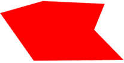
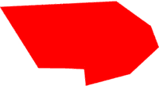
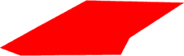
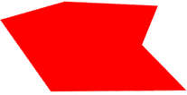
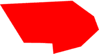
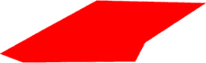
 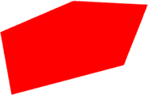
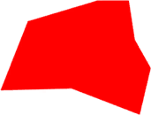
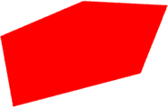
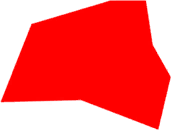
 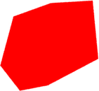
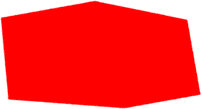
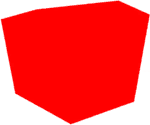
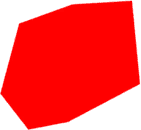
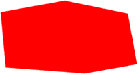
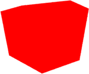
 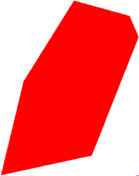
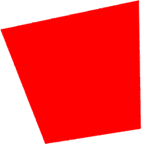
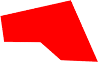
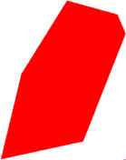
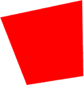
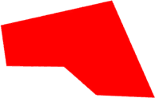
 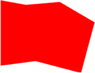
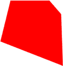
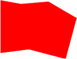
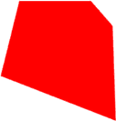
 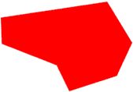
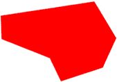

 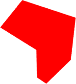
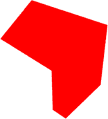

 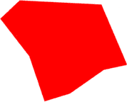
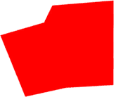
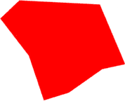
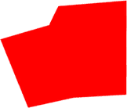
 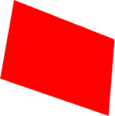
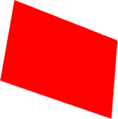


 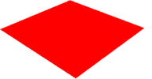
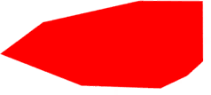
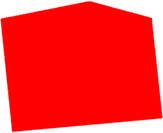
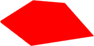
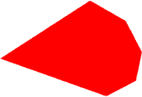
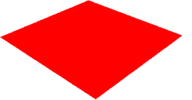
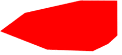
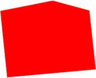
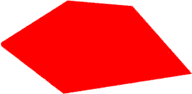
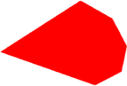